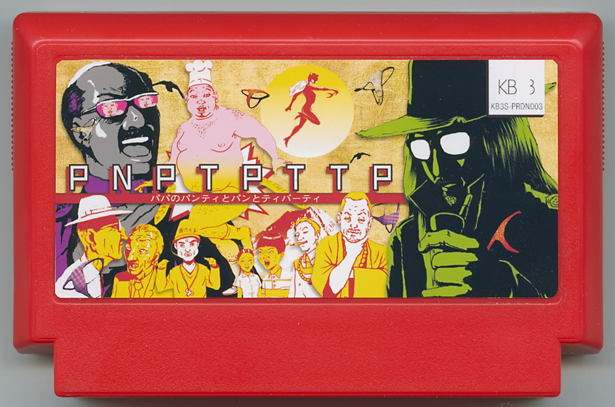

PNPTPTTP
Karabako San／Singer・Private Dick
大変です、パパのミラクルパンティーが消えてしまった！ スーパー探偵、コチーズが解決するのに、お宅の手伝いが必要です。パパのティーパーティーまでにパンティーが見つからなければ、パパの美味しいパンが台無しになってしまう。パパのパンの生地のどこかにパンティーが混ざってます！ 早く見つけてあげて、パーティーを救いましょう！